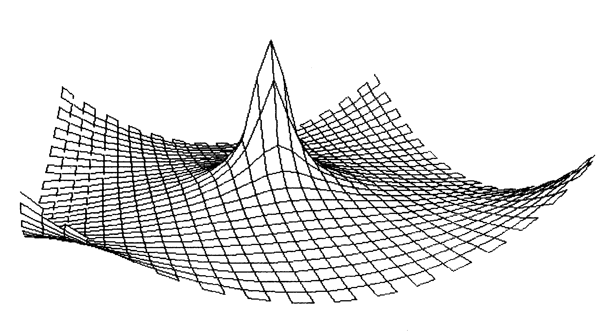
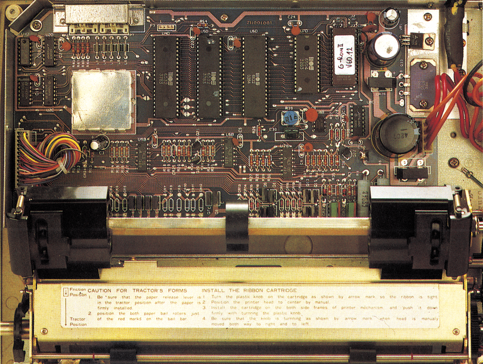

Grafikzauber mit dem MPS 802
Durch ein neues Betriebssystem wird der MPS 802 zu einem Grafikdrucker. Lesen Sie im folgenden Artikel, was diese Erweiterung alles leistet.
W enn Sie einen MPS 802 besitzen, dann werden Sie bestimmt schon öfters einmal einen neidischen Blick auf die Besitzer eines MPS höchstens ein einziges Son-801/803 oder eines Epson-Druckers geworfen haben. Der MPS 802 unterstützt zwar ganz hervorragend den formatierten Ausdruck; das kann Sie jedoch kaum über die fehlenden Grafikmöglichkeiten hinwegtrösten.
Während der MPS 801 zum Beispiel in der Lage ist, wunderschöne Hardcopies auszudrucken, bekommen Sie beim MPS 802 große Probleme. Nun, woran liegt das?
Prinzipiell handelt es sich hierbei nur um ein Problem des Betriebssystems Ihres Druckers. Während das Betriebssystem des MPS 801 den Anwender in die Lage versetzt, jede einzelne Drucknadel anzusteuern, können Sie mit dem MPS 802 derzeichen pro Druckzeile definieren. Dasistdannaber auch schon alles!
Die Firma Haarmann hat diesen Mangel erkannt und kurzerhand ein Betriebssystem für den MPS 802 ent- MPS 802. wickelt, das Sie in die Lage versetzt, alle Grafikbefehle des MPS 801 und 803 auch auf dem MPS 802 zu verwenden. Ihr Drucker wird also MPS 801-kompatibel. Das Interessante dabei ist, daß keine Funktion des MPS 802 dabei verlorengeht. Ihr Drucker ist also auch weiterhin kompatibel zum »normalen«
19 neue Befehle
Insgesamt stehen durch einfaches Austauschen des Betriebssystems 19 neue Befehle zur Verfügung. Davon erlauben drei Befehle sogar eine gewisse Kompatibilität zu Epson-Druckern.
Haben Sie also zum Beispiel das Programm »Print-Master«, so ist es vollkommen egal ob Sie das Programm auf MPS-Modus oder auf Epson-Modus stellen. In beiden Fällen erfolgt ein einwandfreier Ausdruck.
Weiterhin wurden mehrere Zeichensätze integriert. Ihr MPS 802 ist nun in der Lage amerikanisch, deutsch, französisch, dänisch oder spanisch zu drucken. Auch an einen speziellen Zeichensatz für das Textverarbeitungs-Programm »Vizawrite« wurde gedacht, so daß auch hier ein problemloser Ausdruck mit deutschen Umlauten möglich wird.
Für Asthetiker, denen vielleicht gewisse Eigenheiten des Schriftbildes des MPS 802 nicht gefallen, wurden die drei»unmöglichsten« Zeichen »k«, »g« und » ' «in eine bessere Form gebracht. Das Schriftbild des MPS 802 wird dadurch gleich sehr viel ansehnlicher. \
Aber mit diesen Änderungen nicht genug (kaum zu glauben, was in einem EPROM alles Platz hat), zusätzlich gibt es noch eine Druckweg-Optimierung für Grafikausdruck im Epson-Modus (bei Leerzeilen kein Kopftransport), eine Unterstreichungsfunktion, eine Hexadezimal-Betriebsart, eine Voreinstellung auf deutsche Papiermaße (72 Zeilen), einen ladbaren Zeichengenerator mit zehn selbst zu definierenden Zeichen und eine Abschaltmöglichkeit der Sekundäradressen.
Es ist wirklich beeindruckend, den MPS 802 mit diesem neuen Betriebssystem zu beobachten. Grafiken werden mit einer im Vergleich beinahe faszinierenden Geschwindigkeit ausgedruckt. Da bleibt sogar der MPS 801 auf der Strecke, der für gleiche Bilder gut doppelt so lange braucht.

An Programmen konnten wir ausprobieren was wir wollten; es lief alles. Angefangen bei Ausdrucken mit Print Shop Hi-Eddi und Newsroom über Simons Basic und KoalaPrinter bis hin zu Print Master und Superprint (siehe Bild ]).
Diese ganzen Neuheiten sind um so erstaunlicher, wenn man bedenkt mit welch geringem Arbeitsaufwand der Drucker auf das neue Betriebssystem umgerüstet werden kann. Es muß lediglich das bisherige ROM aus seinem Sockel gehebelt und das neue EPROM in diesen Sockel gesteckt werden (siehe Bild 2), und schon steht ein völlig neuer Drucker zur Verfügung.

Dieser neue Drucker hat dabei von jedem etwas: Er ist MPS 801- und 803-kompatibel, versteht einige ESC-Steuersequenzen wie sie von den Epson-Druckern her bekannt sind, und schließlich beherrscht er noch die Fähigkeiten, die ihn als MPS 802 auszeichnen.
Eine hervorragende Sache also, die nur einen einzigen Nachteil hat und dafür kann das neue Betriebssystem noch nicht einmal etwas: Durch den Nadelabstand des MPS 802 im Gegensatz zum MPS 801, werden Grafiken teilweise leicht verzerrt ausgedruckt. Auch Grafiken mit höherer Punktdichte können natürlich nicht ohne weiteres ausgegeben werden. Hier behilft sich das Betriebssystem mit einem Trick, bei dem mehrere Nadelreihen in einer einzigen Reihe zusammengefaßt werden. Dadurch scheint die Punktdichte höher zu werden und eventuelle Verzerrungen werden ausgeglichen.
Insgesamt ist das neue Grafik-ROM für den MPS 802 vorbehaltlos zu empfehlen. Alles, was auf dem Druckwerk des MPS 802 möglich ist, kann gedruckt werden. Grenzen sind also nicht mehr durch das Betriebssystem des Druckers, sondern nur noch durch die technischen Möglichkeiten des MPS 802 gesetzt. Eine tolle Angelegenheit für 78 Mark.
(ks)Info: Heinz Haarmann, Kosterstraße 92, 4630 Bochum 1, Telefon (0234) 793212